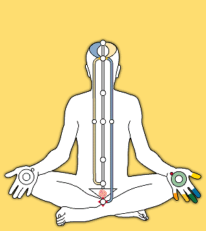

クンダリニとアトゥマ

精妙な身体（サトルボディ）
育てるような愛。ひとりひとりにクンダリニがあり、彼女は私達の母なる神です。私達は彼女のひとりの子供。彼女は24時間内側から私達を見守っています。私達がすること、言うことや考えたり感じたりすることすべてを知っています。引き起こされると私達のスピリチュアルな成長を促します。ほとんどの人はクンダリニが覚醒した状態で生まれてきたわけではありません。スピリチュアルな存在としての人間の進化がまだ適切な状態になっていなかったのです。7番目のチャクラ、サハスララが開き、私達のスピリチュアルな進化が新しい段階へと達しました。今日、私達人間の肉体的、生物学的、化学的、心理学的要素がスピリチュアリティのより高い状態へと達することができるようになりました。
セルフ・リアリゼーションのプロセスは、脊柱の最深部のチャンネル（ナディ）に沿って存在する6つのスピリチュアルなセンターあるいはチャクラを、仙骨に座しているクンダリニが引き起こされ貫通し、脳のてっぺんから現れることからなるのです。これが起こると、クンダリニと自己との結合（ヨガ）が現れてきます。脳を通ることで、クンダリニは私達のアテンションも一緒に携えていきます。それゆえ、私達のアテンションが思考のない純粋な静けさにおいて自己を意識することができるのです。
Source: http://www.t3.rim.or.jp/~hitoshii/Kundalini%20and%20Atma.htm